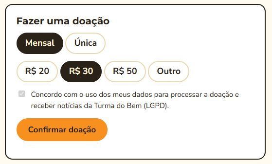
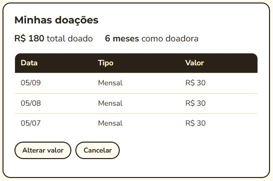

Challenge FIAP × Turma do Bem
Portal do doador
O doador tem a opção de escolher como quer ajudar e acessar o histórico de suas doações
O problema
Quem quer doar precisa de um caminho simples, e quem já doa precisa de um lugar para acompanhar, alterar ou cancelar a doação.
Como o Sorriso Recorrente resolve isso
- Escolha o tipoDoação única ou mensal.
- Escolha o valorValores sugeridos ou outros valores.
- Aceite o consentimentoTermo LGPD obrigatório no cadastro.
- AcompanheHistórico e total doado.
Protótipo · dados fictícios

